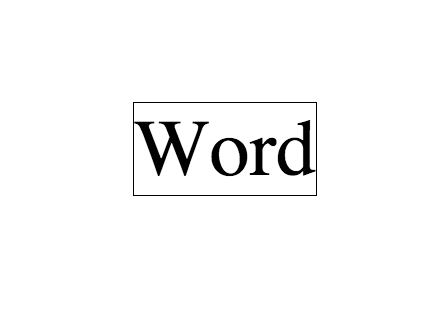
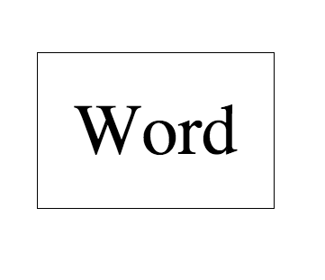
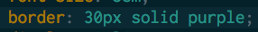
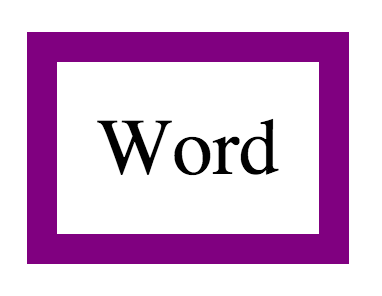
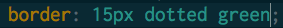
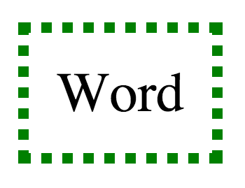
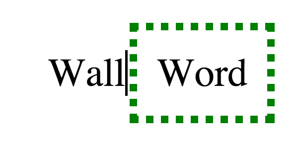
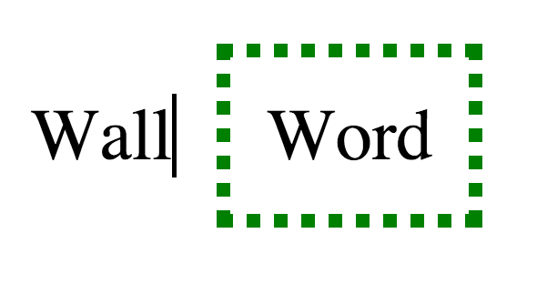

I was excited to dive into CSS. I thought, I'd be making my websites look professional in no time once I just dove in. Turns out there's an enormous pile of ideas packed into 'CSS' and even small pieces of it can be tricky to understand. Today, I'll try to unravel the mysteries of margin, border, and padding.
I hope this blog post can explain a small part of CSS positioning, having to do with the space around an element. To start, take a look at this image:

That's the image I use when this things gets fuzzy in my head and it honestly does a great job explaining what's going on. The only part that requires some imagination is what your element actually is. In this case, let's picture it as a word.
The space between the word and any border is called the padding. If the padding size is increased, the border will get further and further away. Here's an image of our word with a simple border around it and no padding at all. 
Now, in my CSS document I will increase the padding to 40px. You can see the code and results here:

The border itself is easy to understand. It's basically a line or dotted line that goes around your element. One can play with the thickness and whether or not the border actually goes all the way around or any number of other attributes of the border. We've been using a one pixel solid black border so far. Let's see what happens when we change it a couple of different ways.
Here's the code and image for a 30 pixel solid purple border.


Here's the code and image for a 15 pixel dotted green border.


The margin is the space between an element and another element. Or it could be the space between an element and the side of the browser. It's used to push your element away from other things.
To illustrate this, I've created another element. It's the word "wall" with a nice big wall next to it. I've put it right next to our element. (I saved our dotted green border. It's a nice look.)

Now watch what happens when I increase the left margin of our "word" element. "Word" will move 40px away from the wall.

There are many other things margin, border, and padding can do but I hope I've helped illustrate the basics. When in doubt always refer to the cheat sheet image at the top of this page! If you want to dive in further, W3 Schools is a great resource.